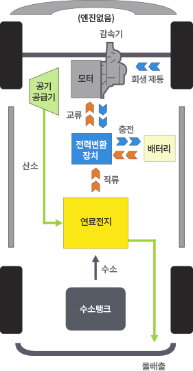
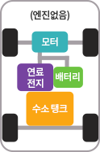

무공해차의 원리·종류·충전 방식부터 용어·초보자 가이드까지 한 곳에서 배우는 친환경 모빌리티 백과사전입니다.
수소전기자동차(Fuel Cell Electric Vehicle, FCEV)는 수소와 공기 중 산소를 연료전지에서 반응시켜 전기를 생산하고, 이 전기로 모터를 구동하는 자동차입니다. 주행 중 배출물은 순수한 물(H₂O)뿐이며, 오히려 흡입된 공기를 정화하는 효과까지 있어 '달리는 공기청정기'로도 불립니다.
수소전기차는 수소와 공기중의 산소를 직접 반응시켜 전기를 생산하는 연료전지를 이용하는 자동차로서 물 이외의 배출가스를 발생시키지 않기 때문에 각종 유해 물질이나 온실가스에 의한 환경피해를 해결할 수 있는 환경친화적 자동차입니다.
수소가 연료전지에 공급되면 전자와 수소이온으로 분리되고 이 때 발생한 전자들은 외부 회로로 전달되어 연료전지 자동차의 모터를 구성하는 동력원인 전기에너지로 사용됩니다. 또한 수소에서 분리된 수소이온들은 전해질 막을 통과해 막 반대편의 연료전지에 공급된 공기중의 산소와 반응하여 물을 생성하게 됩니다. 이 때 생성된 물은 수소전기차의 유일한 배출물로서 남은 공기와 함께 대기 중으로 배출됩니다.
수소전기차는 내연기관차와 달리 엔진이 없으며, 전기차와 달리 전기공급 없이 내부에서 전기를 생산합니다.


수소 충전은 700bar(승용차)와 350bar(상용차) 두 가지 압력 표준을 사용합니다. 충전 시간은 승용차 기준 5분 내외로 내연기관 주유 시간과 유사하며, 1회 충전으로 600km 이상 주행이 가능합니다.
전국 145개소의 수소충전소가 운영 중이며, 수도권·영남권을 중심으로 확대되고 있습니다. 운영사별 장애 현황과 정비 일정은 수소충전소 Help Desk에서 실시간 확인할 수 있고, 장애 시 대체 충전소를 안내받을 수 있습니다.
수소차는 아직 충전 인프라가 전기차보다 제한적이어서 거주지·주요 이동 경로상 충전소 위치를 사전에 확인하시는 것이 중요합니다. 또한 장거리 출퇴근·장거리 화물 운송 등 주행거리 요구가 큰 용도에 특히 적합합니다.